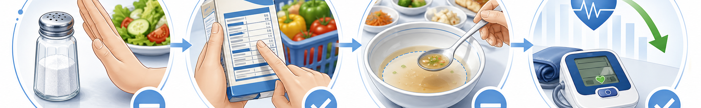

한눈에 보는 핵심 수치
한국인 평균 섭취
3,200
mg / 일 (목표의 1.6배)
권장 목표
2,000
mg / 일 (대한고혈압학회)
소금 환산
5
g / 일 (1작은술)
기대 효과
−5~10
mmHg (수축기 혈압)
실천 항목 (Do & Don't)
이렇게 하세요 · DO
- 1. 신선한 채소·과일 매끼 ½접시 이상 (Na < 50mg)
- 2. 직접 조리 시 소금 계량 — 1작은술(5g) 이내
- 3. 레몬즙·식초·허브·후추로 맛내기 (대체 양념)
- 4. 칼륨 풍부 식품 — 바나나·감자·시금치·고구마 (Na 배출 ↑)
- 5. 영양성분표 확인 — 1회분당 Na 400mg 이하 선택
- 6. 흰살생선·두부·계란으로 단백질 (Na < 100mg)
- 7. 물 하루 1.5L 이상 — 나트륨 배출 촉진
이것은 피하세요 · DON'T
- 1. 국물 다 먹기 — 라면 국물 1대접 ≈ 1,800mg
- 2. 젓갈·장아찌 1큰술 ≈ 1,200mg (60% 도달)
- 3. 가공육 — 햄·소시지 100g ≈ 900mg
- 4. 외식 소스·드레싱 듬뿍 (간장 1큰술 ≈ 1,000mg)
- 5. 인스턴트·배달 — 짜장면 1그릇 ≈ 2,400mg
- 6. 통조림·즉석국 자주 사용 (Na 1,000mg+)
- 7. 단무지·피클 등 절임류 무제한 섭취
복약 중인 분 · IMPORTANT
이뇨제(다이크로짇·라식스 등) 또는 ARB·ACE 억제제 복용 중에 갑작스럽게 나트륨 섭취를 크게 줄이면 기립성 저혈압·어지러움·전해질 불균형이 생길 수 있습니다. 1~2주에 걸쳐 점진적으로 줄이고, 어지러움이 지속되면 바로 외래로 연락 주세요. (☏ 031-893-4560)